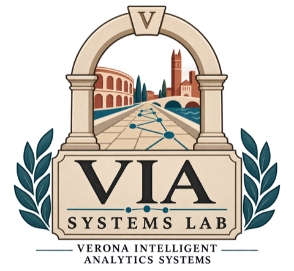

VIA Systems Lab Verona Intelligent Analytics Systems
We design and study systems that make access to complex information spaces reliable, validated and interactive, bridging foundations in data management with human-centered analytics.
University of Verona · Department of Foreign Languages and Literatures · Verona, Italy

01 About
About the lab
The VIA Systems Lab is a research lab at the University of Verona working on intelligent analytics systems, information access, and data-centric methods.
Our mission is to design and study systems that enable reliable, validated and interactive access to complex information spaces, bridging foundations in data management with human-centered analytics. Among others, we specialise in open data and digital archives for the digital humanities.
The lab is led by Matteo Lissandrini, Associate Professor of Computer Science, whose research spans data exploration, knowledge graphs, and intelligent analytical systems.
How we use, and decline to use, AI tools in that work is set out in our statement on AI and scientific research.
Fatti non foste a viver come bruti,
ma per seguir virtute e canoscenza.
You were not made to live like brutes, but to follow virtue and knowledge.
02 Research
Five themes, one question
How do you give a person a trustworthy answer over data that is large, heterogeneous and incomplete, and let them check it?
-
Intelligent data analytics
Systems and algorithms that make large, heterogeneous data collections searchable, combinable and analysable at the scale research actually produces.
-
Knowledge graphs and data exploration
Graph data management and exploratory search over entity-centric, semantically linked collections, where the useful question is often the one you could not phrase up front.
-
Human-centered analytics
Interactive and conversational interfaces that let a person steer an analysis, see what it did, and correct it while it runs.
-
Validated and trustworthy data systems
Grounding, verification, explainability and evaluation designed into an analytical pipeline rather than bolted onto it once the answers are already out.
-
Open data and digital archives
FAIR and openly reusable data, with particular attention to digital archives and the digital humanities: collections that were assembled by scholars long before anyone called them a dataset.
03 Projects
Selected work
Two Horizon Europe projects currently fund the lab’s work.
-
ARMADA
Reliable Conversational Domain-specific Data Exploration and Analysis
A doctoral network training fifteen researchers on what it takes for a language model to be reliable when it assists analysis in a sensitive domain.
-
DataGEMS
Data Discovery Platform with Generalized Exploratory, Management, and Search Capabilities
A dataset discovery ecosystem that profiles heterogeneous data and guides people while they find, analyse and combine it.
04 People
People and affiliation
We work with doctoral candidates, postdoctoral researchers, scientists, and collaborators in Verona and beyond.
Principal investigator
-
Matteo Lissandrini
Associate Professor in Computer Science
Department of Foreign Languages and Literatures, University of Verona
Data exploration, intelligent data management systems and knowledge graphs. Coordinator of ARMADA.
Members
-
Doctoral candidate
To be announced
University of Verona
Recruited through the ARMADA doctoral network. The name, topic and profile links are published once the appointment is confirmed.
-
Zoé Chevallier
Postdoctoral researcher
Department of Foreign Languages and Literatures, University of Verona
Position associated with DataGEMS. Knowledge Graphs, Polyglot systems, Data Discovery & Management
External members
-
External member
To be announced
Affiliation to be confirmed
Researchers who work with the lab from another institution and are listed here with their agreement.
Collaborators
-
Collaborator
To be announced
Affiliation to be confirmed
Colleagues in the ARMADA and DataGEMS consortia and beyond, listed here with their agreement once a shared output exists.